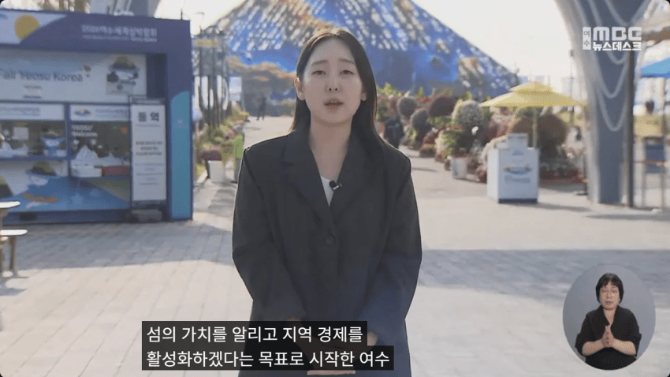
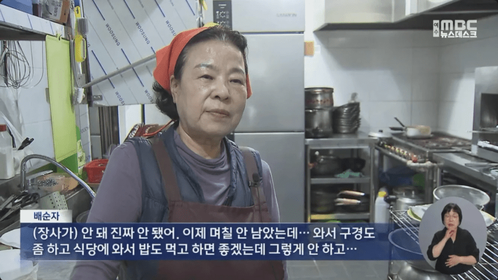
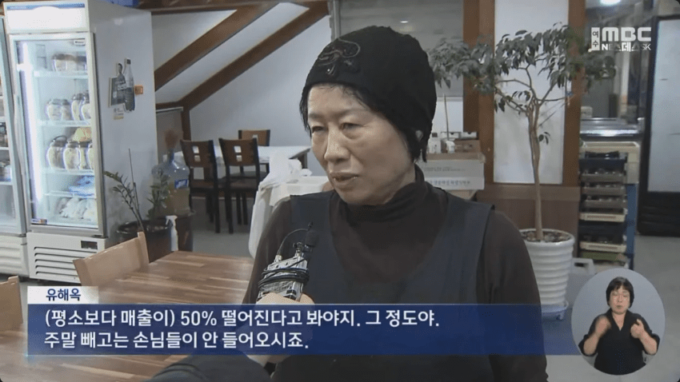
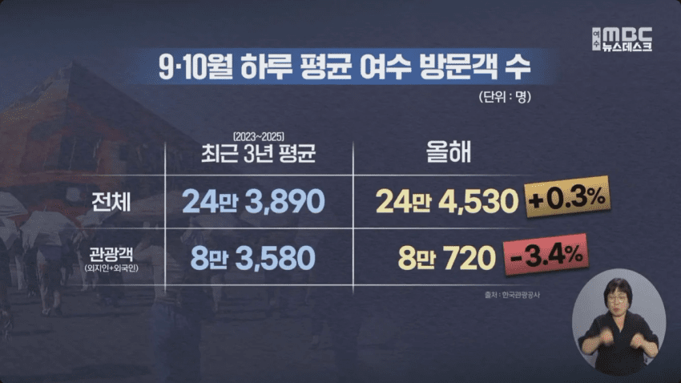
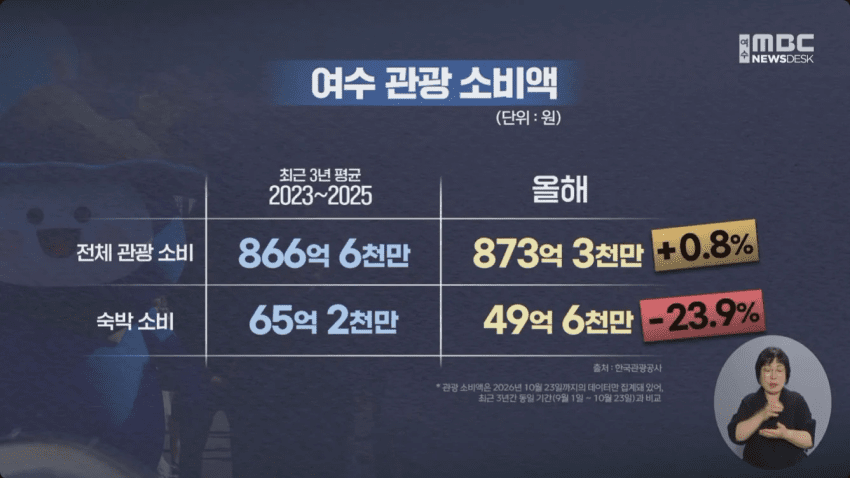
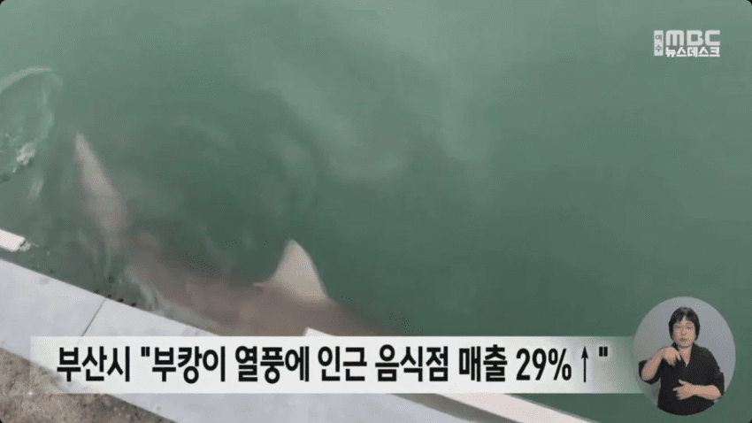
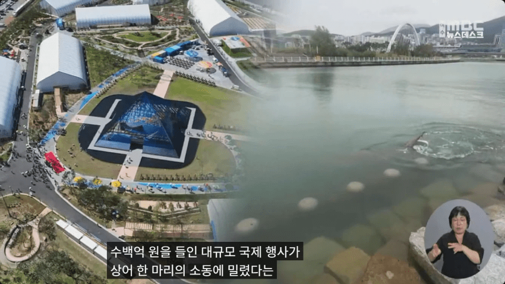
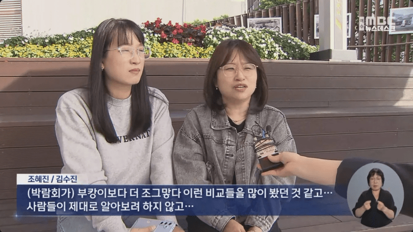
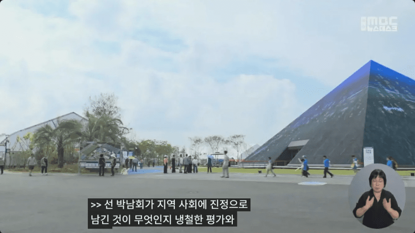

1800억을 들였더니 방문객 수는 차이도 없고
관광 소비액은 오히려 크게 감소한 기적을 달성
부캉이만도 못한 1800억짜리 박람회 되시겠다!
아무튼 이렇게 상어 한 마리만도 못한
민주 박람회는 이렇게 끝났다고 한다 ㅋㅋ
- dc official App
댓글
댓글 보관 대기 중입니다. 원문 응답 오류가 있으면 다음 실행에서 다시 수집합니다.